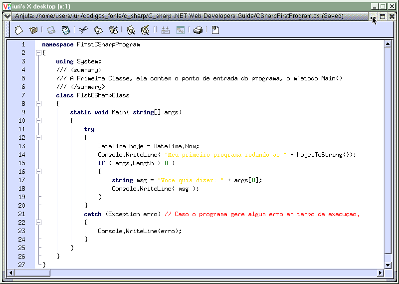
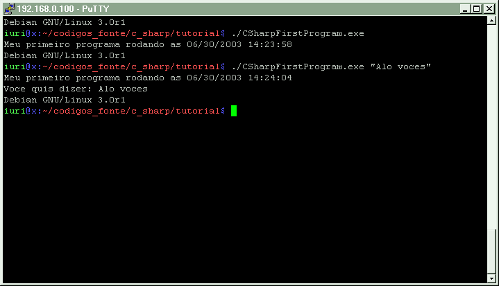
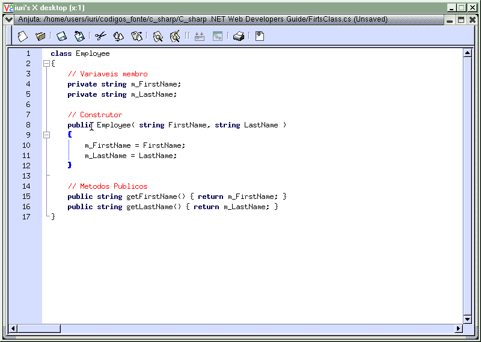

Este módulo dá uma visão geral do C#.
Última revisão: 10/07/2003
Página do projeto: http://tux.lcc.ufrn.br/~iuri/projeto
Abra seu editor de textos preferido e escreva o seguinte programa:

Compile e execute.
Ao longo desse módulo, será descrito alguns aspectos deste primeiro programa.
Observe a saída do programa:

Classes são os ingredientes básicos das linguagens orientadas a objetos. As classes em C# são declaradas com a palavra reservada class seguida do nome da classe e um bloco de comandos entre chaves. Nosso primeiro programa possuía somente uma classe e seu nome era FirstCSharpClass.
C#, como a maioria das linguagens orientadas a objetos, suporta métodos e variáveis membro.
Observe a classe abaixo:

Esta classe possui três métodos e duas variáveis membro. Possui o construtor Employee e dois outros métodos getFirstName e getLastName,
Classes e membros podem ter modificadores associados aos mesmos que definem sua visibilidade.
| Modificador de acesso | Visibilidade |
| public | Acessível de qualquer lugar. |
| protected | Acessível somente pela própria classe ou qualquer classe derivada desta. |
| internal | Acessível somente pelo programa em que foi declarada. |
| protected internal | Acessível somente pela própria classe ou qualquer classe derivada desta no mesmo programa. |
| private (padrão) | Acessível somente pela própria classe. |
| static (em métodos) |
Indica que o método não está associado a nenhum objeto e é chamado no contexto da classe com a sintaxe classe.método em vez de objeto.método |
Você não precisa se preocupar em fazer um destrutor para sua classe, pois a .NET CLR usa um coletor de lixo que automaticamente limpa a memória.
Todo programa em C# deve ter o método Main, aqui alguns exemplos de declaração do método Main:
static void Main( string[] args )
static int Main( )
static int Main( string[] args )
Quando o programa é executado, ele sempre chama o método Main. O método Main é sempre declarado como static. Note que ele é sempre declarado dentro de uma classe, isto é sempre será um método. Em outras linguagens como C++, o ponto de entrada do programa é sempre uma função global. Funções globais não são permitidas em C#.
O método Main, pode obter os argumentos de linha de comando passados ao programa em forma de um vetor de strings. Em nosso primeiro programa, nós checamos se foram passados alguns argumentos:
if (args.Length > 0 ) {
[...]
}
Nosso primeiro exemplo é um aplicativo para console, uma aplicação deste tipo, não tem um interface com o usuário(UI), não há caixas de opções, botões ou janelas. A entrada e a saída do texto vem do console, que no windows o prompt do MS-DOS. Aplicativos para console simplificam os exemplos dados nos módulos.
Namespaces são usados em .NET para organizar as bibliotecas de classes em uma estrutura hierárquica, a .NET Framework SDK possui diversos namespaces como System, System.Windows.Forms, System.IO, System.Web.Forms.
O operador "." é usado para separar namespaces que estão dentro de outros, como também é usado para separar classes que estão contidas dentro de namespaces. Por exemplo, no namespace System.IO, temos uma classe chamada File, para criarmos uma instância dessa classe devemos proceder assim:
System.IO.File file = new System.IO.File();
Outra utilidade dos namespace´s é resolver os possíveis conflitos de classes de mesmo nome.
Você pode estar pensando que vai escrever uma porção de código para declarar um objeto, felizmente existe um atalho, a palavra reservado using.
Você pode criar uma nova instância de uma classe desse jeito:
using System.IO;
File file = new File();
O operador . também é usado para acessar um método (o um dado) em uma classe (no caso do método WriteLine() da classe Console) e para restringir uma classe a um específico Namespace (como em System.IO.File, onde File é exclusivamente uma classe do namespace System.IO), esta restrição é para termos certeza que estamos chamando uma classe de certo namespace.
C# suporta 3 tipos diferentes de comentários, comentários de uma linha, comentários de múltiplas linhas e comentários de documentação de código.
Comentários de uma linha começam com // e tudo que estiver apos ele não será interpretado até o final da linha. Comentários de múltiplas linhas começam com /* e terminam com */ e se expandem por múltiplas linhas, texto entre eles constituem um comentário.
exemplo de comentários de uma linha:
// Atributo que contém o nome do usuário.
public string usuario = "João Medeiros";
// Atributo que contem a idade do usuario.
public int idade = 26;
System.Console.WriteLine("Usuario: " + usuario); //escreve o nome do
usuario
System.Console.WriteLine("Idade: {0} anos", idade.ToString() );
Exemplo de comentários de múltiplas linhas:
/*
O seguinte código não é executado,
Console.WriteLine( hoje.ToString() );
*/
Comentários que começam com ///, constituem a documentação XML do seu código. Documentando seu código com este tipo de comentário, o compilador pode gerar automaticamente toda a documentação para ser aproveitada por outras pessoas.
Observando nosso primeiro programa exemplo, vemos que uma parte do código foi declarada em um bloco try e outra parte em um bloco catch. Pois bem C# pois controle e tratamento de erro, todo código que pode gerar um erro deve ser declarando num bloco try e caso este gere o erro, o código declarado no bloco catch é automaticamente chamado e executado.
C# é case-sensitive, isto quer dizer que writeline não é a mesma coisa de WriteLine, que não é a mesma coisa de WRITELINE.